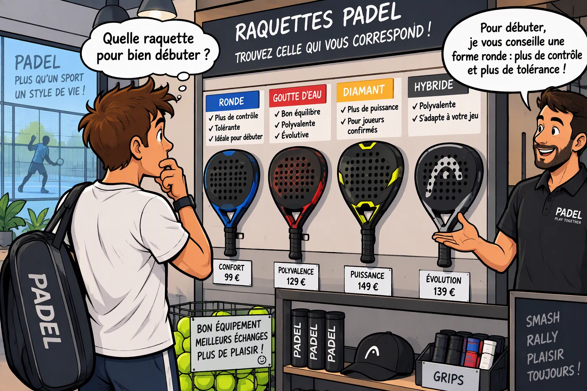

Comment choisir sa raquette de padel quand on débute
Publié par Le Guide du Padel
Lorsque l'on commence le padel, choisir sa toute première raquette peut vite devenir un casse-tête face à la multitude de formes, de poids et de technologies disponibles sur le marché. Avant de faire votre choix, assurez-vous d'avoir bien assimilé les règles fondamentales du jeu et les positions clés sur la piste. Contrairement aux idées reçues, une bonne raquette pour débutant n'est pas la plus puissante, mais celle qui pardonne les erreurs de centrage et protège vos articulations.

Pour faire le bon choix, trois critères essentiels sont à analyser : la forme, le poids et la dureté de la mousse.
1. La forme de la raquette
La forme d'une raquette détermine la répartition de son poids et la taille de son "sweet spot" (la zone idéale de frappe).
| Forme | Pour qui | À savoir |
|---|---|---|
| Ronde | Débutants / Joueurs axés contrôle | Point idéal très large, contrôle et tolérance élevés, maniabilité maximale, peu de puissance naturelle. |
| Goutte d'eau | Intermédiaires / Polyvalents | Excellent compromis entre contrôle et puissance. Le point idéal est légèrement plus haut. |
| Diamant | Joueurs avancés / Attaquants | Point idéal haut (en tête), très puissante mais très exigeante et moins tolérante en cas de décentrage. |
Notre conseil pour débuter : Optez sans hésiter pour une raquette de forme ronde. Elle vous permettra de renvoyer plus facilement la balle de l'autre côté du filet, en accord avec les principes tactiques vus dans notre guide complet des règles.
⚡ Sélection de 4 marques de raquettes débutant abordables
Publicité responsive intégrée
2. Quel budget prévoir selon votre niveau ?
Le prix d'une raquette de padel varie énormément en fonction des matériaux utilisés (fibre de verre vs carbone) et de la technicité. Voici les fourchettes de prix constatées sur le marché :
- Niveau Débutant (50€ à 90€) : Privilégie la fibre de verre et la souplesse. Ce sont des raquettes tolérantes, confortables et parfaites pour apprendre les bases sans se faire mal au bras.
- Niveau Intermédiaire (100€ à 180€) : Introduction progressive du carbone, meilleure durabilité, rigidité accrue pour gagner en précision et commencer à imprimer de la vitesse.
- Niveau Avancé / Expert (200€ à 350€+) : Carbone haut de gamme, technologies anti-vibrations poussées et mousses denses pour un rendement maximal en compétition ou match intense.
3. Le poids et l'équilibre
Les raquettes de padel pour adultes pèsent généralement entre 340 et 380 grammes. Le choix du poids dépend de votre profil physique, mais surtout de la façon dont ce poids est réparti (l'équilibre) :
- Raquette légère (340 - 355 g) : Idéale pour les débutants, les femmes ou les joueurs sujets aux douleurs au coude. Elle offre une excellente maniabilité et fatigue beaucoup moins le bras.
- Raquette lourde (365 - 380 g) : Apporte plus de stabilité et de poids dans les frappes, mais demande plus de force musculaire et augmente les risques de fatigue articulaire.
Pour un homme débutant, une tranche de 360 à 365 grammes avec un équilibre bas (orienté vers le manche) est un compromis parfait.
4. La mousse (noyau) : Souple ou rigide ?
À l'intérieur de la raquette se trouve de la mousse. On distingue principalement deux grandes familles :
- La mousse souple (EVA Soft ou Foam) : Elle offre un excellent confort de frappe, absorbe les vibrations (parfait pour éviter les tendinites) et procure un "effet trampoline" qui aide à faire sortir la balle sans effort. C'est le choix numéro un pour débuter.
- La mousse rigide (EVA Hard) : Moins tolérante, elle s'adresse aux joueurs confirmés qui cherchent de la précision et de la puissance pure en smash.
En résumé : Le portrait-robot de la raquette idéale pour débuter
Pour résumer, si vous achetez votre première raquette, cherchez les caractéristiques suivantes :
- Une forme ronde pour un maximum de tolérance.
- Un poids modéré (autour de 355-365g) pour préserver votre bras.
- Une mousse souple (Soft) pour le confort et le rebond.
- Un budget maîtrisé entre 50€ et 90€.
🔥 Prêt à franchir le pas et à vous équiper au meilleur prix ?
🛒 Voir toutes les raquettes abordables sur Amazon